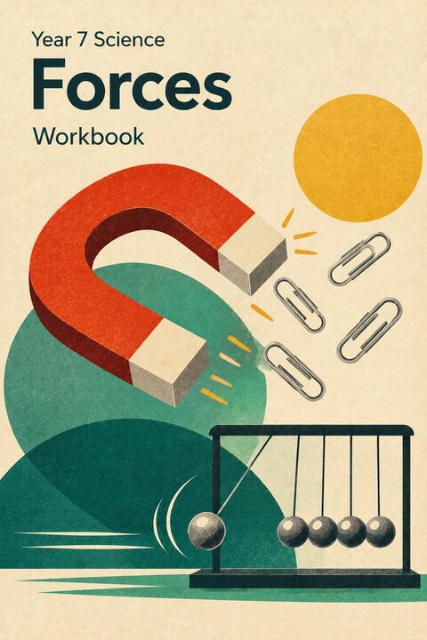

Year 7 Science · Forces & Motion · Catch-up summary
The Whole Unit in Three Lessons
Forces, Newton’s laws, energy, levers and projectiles — then the investigation skills the CAT asks for.
Press → to begin.

Overview
Three lessons, then the CAT
| Lesson | Big ideas | Workbook |
|---|---|---|
| 1 | Forces and Newton’s laws — pushes and pulls, mass and weight, force diagrams, net force, \(F = ma\) | p. 2 |
| 2 | Energy, levers and projectiles — energy chains, efficiency, levers, the trebuchet, what happens after launch | p. 11 |
| 3 | Investigating — variables, means and odd results, line graphs, patterns, errors, conclusions, and a practice test | p. 21 |
Key vocabulary → the big ideas (I do, then We do) → practice → CAT check. The formula sheet and checklist are on the last page of the workbook.
Lesson 1 of 3
Forces and Newton’s laws
In this lesson you will:
- Say what a force is, and sort forces into contact and non-contact
- Tell mass from weight, and calculate weight with \(W = mg\)
- Draw force arrows, find the net force, and decide if forces are balanced
- Use Newton’s three laws, including \(F = ma\)
Lesson 1 · Starter
You do Key vocabulary
Copy each definition into the Key vocabulary table at the start of Lesson 1.
| Word | Meaning |
|---|---|
| Force | A push or a pull on an object. Measured in newtons (N). |
| Mass | How much matter is in an object. Measured in kilograms (kg). |
| Weight | The force of gravity pulling on a mass. Measured in newtons (N). |
| Contact force | A force that needs the objects to touch, like friction. |
| Non-contact force | A force that acts across a gap, like gravity or magnetism. |
| Net force | The overall force left when all the forces are combined. |
| Balanced forces | Forces that cancel out: the net force is zero. |
| Unbalanced forces | Forces that do not cancel: there is a net force. |
| Inertia | An object’s tendency to keep doing what it is doing. |
| Acceleration | How quickly an object speeds up, slows down or changes direction. |
Lesson 1 · The big ideas
Every force is a push or a pull
A push or a pull, measured in newtons (N) with a spring scale.
A force can make an object:
- start moving, or stop
- speed up or slow down
- change direction
- change shape
Is a magnet pulling a paperclip a contact or a non-contact force?
Lesson 1 · The big ideas
I do Mass and weight
| Mass | Weight | |
|---|---|---|
| What it is | how much matter | the force of gravity on it |
| Unit | kg | N |
| On the Moon? | the same | less |
\(W = mg\) On Earth \(g = 9.8\) N/kg. On the Moon \(g = 1.6\) N/kg.
A dog has a mass of 20 kg. Find its weight on Earth.
- 1 \(W = mg = 20 \times 9.8\)
- ✓ \(W = 196\ \text{N}\)
Lesson 1 · Work through together
We do Weight on Earth and the Moon
A student has a mass of 40 kg.
(a) Find their weight on Earth.
(b) Find their weight on the Moon.
Write your working in the We do 1.1 box in your workbook.
- 1 (a) \(W = mg = 40 \times 9.8 = 392\ \text{N}\)
- 2 (b) \(W = mg = 40 \times 1.6 = 64\ \text{N}\)
- ✓ Their mass is still 40 kg on the Moon — only the weight changes.
Lesson 1 · The big ideas
I do Force diagrams and net force
- Same direction: add.
- Opposite directions: subtract; it points the way of the bigger force.
Push 20 N right, friction 5 N left. Net force?
- 1 Opposite directions, so subtract: \(20 - 5 = 15\ \text{N}\)
- ✓ 15 N to the right — unbalanced, so the box speeds up.
Lesson 1 · The big ideas
Balanced or unbalanced?
| Forces are… | Net force | What happens to the motion |
|---|---|---|
| balanced | zero | no change — a still object stays still; a moving object keeps the same speed and direction |
| unbalanced | not zero | it speeds up, slows down or changes direction |
Balanced does not mean “not moving”. A car cruising at a steady 60 km/h has balanced forces.
A cyclist rides at a steady speed in a straight line. Are the forces balanced or unbalanced?
Lesson 1 · Work through together
We do Tug of war
One team pulls left with 600 N. The other team pulls right with 450 N.
(a) Find the net force and its direction.
(b) Are the forces balanced or unbalanced? What happens to the rope?
Write your working in the We do 1.2 box in your workbook.
- 1 (a) Opposite directions, so subtract: \(600 - 450 = 150\ \text{N}\), to the left
- ✓ (b) Unbalanced — the rope starts to move (speeds up) to the left.
Lesson 1 · The big ideas
Newton’s three laws
| Law | In plain words | Example |
|---|---|---|
| 1st | An object keeps doing what it is doing unless an unbalanced force acts. This is inertia. | When a bus brakes, you keep moving forward. |
| 2nd | More force → more acceleration. More mass → less acceleration. \(F = ma\) | An empty trolley is easier to speed up than a full one. |
| 3rd | Forces come in pairs: A pushes B, so B pushes A back just as hard, the opposite way. | A swimmer pushes the wall back; the wall pushes the swimmer forward. |
The two forces act on different objects. Only forces on the same object can cancel.
Lesson 1 · The big ideas
I do We do \(F = ma\)
\(F = ma\) force (N) = mass (kg) × acceleration (m/s\(^2\))
\(a = F \div m\) \(m = F \div a\) — always use the net force.
A 2 kg trolley has a net force of 10 N. Find its acceleration.
- ✓ \(a = F \div m = 10 \div 2 = 5\ \text{m/s}^2\)
A 50 kg skater speeds up at 2 m/s\(^2\). Find the net force on the skater.
- 1 \(F = ma = 50 \times 2\)
- ✓ \(F = 100\ \text{N}\)
Lesson 1 · Practice
You do Practice in your workbook
- Task 1.1 — contact or non-contact, and which way
- Task 1.2 — mass and weight
- Task 1.3 — net force and motion
- Task 1.4 — draw a free body diagram
- Task 1.5 — \(F = ma\)
- Tasks 1.6–1.7 — inertia and force pairs
- Write the formula, then the numbers, then the answer with its unit
- Net force: add the same way, subtract opposite ways
- Balanced means no change in motion
Lesson 1 · Check your practice
Practice answers
Task 1.1 Contact or non-contact?
Gravity on an apple: non-contact, down. Magnet: non-contact, towards the magnet. Air resistance: contact, backwards. Rope: contact, up the hill along the rope.
Task 1.2 5 kg rock
(a) \(5 \times 9.8 = 49\ \text{N}\) (b) \(5 \times 1.6 = 8\ \text{N}\)
(c) No — mass is the amount of matter, the same everywhere. Only the weight changes.
Task 1.3 Net force
(a) \(3000 - 3000 = 0\): balanced, the car keeps moving at a steady speed.
(b) \(60 - 15 = 45\ \text{N}\) forward: unbalanced, the trolley starts moving forward.
Tasks 1.4–1.5
1.4: weight down, support (normal) force up, arrows the same length.
1.5: (a) \(1000 \times 3 = 3000\ \text{N}\) (b) \(12 \div 4 = 3\ \text{m/s}^2\)
Task 1.6 Bus passenger
The brakes act on the bus, not on the passenger. Because of inertia the passenger keeps moving forward at the old speed until the seat belt or seat stops them.
Task 1.7 Rocket
(a) The gas pushes the rocket forward.
(b) They act on different objects (the gas and the rocket), so they cannot cancel.
Lesson 1 · CAT check
You do CAT check
Answer Checks 1.1–1.6 in your workbook on your own first. Then we check.
1.1 After the beanbag leaves the sling, the forces on it are…
its weight and air resistance — nothing pushes it forward.
1.2 A still box weighs 40 N. The floor pushes up with…
40 N — it is still, so the forces are balanced.
1.3 Cyclist at a steady speed: forces are…
balanced
1.4 Which is a non-contact force?
gravity
1.5 A 70 kg astronaut’s mass on the Moon is…
70 kg — mass never changes.
1.6 Weight 700 N, air resistance 500 N. What happens?
The net force is \(700 - 500 = 200\ \text{N}\) down. The forces are unbalanced, so she speeds up as she falls.
Lesson 2 of 3
Energy, levers and projectiles
In this lesson you will:
- Name the forms of energy and write energy chains
- Calculate efficiency, and say where energy is wasted
- Name the parts and classes of a lever, and calculate mechanical advantage
- Explain how a trebuchet throws, and what happens to a projectile
Lesson 2 · Starter
You do Key vocabulary
Copy each definition into the Key vocabulary table at the start of Lesson 2.
| Word | Meaning |
|---|---|
| Energy | The ability to make something happen. Measured in joules (J). |
| Kinetic energy | The energy of a moving object. |
| Gravitational potential energy | Energy stored in an object because it is raised up high. |
| Energy transformation | When energy changes from one form to another. |
| Efficiency | The percentage of the energy put in that comes out as useful energy. |
| Lever | A rigid bar that turns about a fixed point. |
| Fulcrum | The fixed point a lever turns about (the pivot). |
| Effort | The force you put into a lever. |
| Load | The object or force the lever moves. |
| Mechanical advantage | How many times a machine multiplies your force: load ÷ effort. |
| Projectile | An object that is thrown or launched and then flies freely. |
Lesson 2 · The big ideas
Forms of energy
Energy is never made or destroyed. It only changes form or moves to another object.
A trebuchet’s counterweight is winched up high. What energy does it store?
| Form | Stored in, or carried by… |
|---|---|
| Kinetic (KE) | anything that is moving |
| Gravitational potential (GPE) | anything raised up |
| Elastic potential | anything stretched or squashed |
| Chemical | food, fuel, batteries |
| Thermal, sound, light | heat, noise, light — often the wasted energy |
Lesson 2 · The big ideas
I do The trebuchet’s energy chain
Write the energy chain for a trebuchet, from raising the counterweight to the flying beanbag.
- 1 GPE of the raised counterweight → KE of the swinging arm → KE of the flying beanbag
- ✓ Wasted: thermal energy (friction at the pivot) and sound.
Lesson 2 · Work through together
We do A dropped ball
A ball is held up high, dropped, and hits the ground with a thud. Write its energy chain, and name the wasted energy.
Write it in the We do 2.1 box in your workbook.
- 1 Held up high: GPE → falling: KE
- ✓ → sound and thermal energy when it hits — the wasted energy.
Lesson 2 · The big ideas
I do We do Efficiency
\(\text{efficiency} = \dfrac{\text{useful energy out}}{\text{total energy in}} \times 100\%\)
A counterweight gives up 40 J. The beanbag gets 10 J of kinetic energy. Find the efficiency.
- 1 \(10 \div 40 \times 100\% = 25\%\)
- ✓ 25%. The other 30 J is wasted as thermal energy and sound.
A light globe uses 200 J and gives out 50 J of light. Find its efficiency, and name the wasted energy.
- 1 \(50 \div 200 \times 100\% = 25\%\)
- ✓ 25%; the wasted energy is thermal (heat).
Lesson 2 · The big ideas
I do Levers and mechanical advantage
Balanced: effort × effort arm = load × load arm
\(\text{MA} = \dfrac{\text{load}}{\text{effort}} = \dfrac{\text{effort arm}}{\text{load arm}}\)
MA > 1 multiplies force. MA < 1 multiplies speed.
A crowbar has an effort arm of 1.2 m and a load arm of 0.3 m. Find its MA, and the load a 100 N push can lift.
- 1 \(\text{MA} = 1.2 \div 0.3 = 4\)
- ✓ Load \(= 4 \times 100 = 400\ \text{N}\)
Lesson 2 · Work through together
We do Find the mechanical advantage
A lever has an effort arm of 1.5 m and a load arm of 0.5 m.
(a) Find its MA.
(b) What load can a 200 N effort lift?
Write your working in the We do 2.3 box in your workbook.
- 1 (a) \(\text{MA} = 1.5 \div 0.5 = 3\)
- ✓ (b) Load \(= 3 \times 200 = 600\ \text{N}\)
Lesson 2 · The big ideas
The three classes of lever
Levers are sorted by what is in the middle.
Class 1: Fulcrum in the middle
Class 2: Load in the middle
Class 3: Effort in the middle
A wheelbarrow: the wheel is the fulcrum, the load sits in the tray, you lift the handles. Which class?
Lesson 2 · The big ideas
How a trebuchet throws
- It is a Class 1 lever: the pivot is between the counterweight (the effort, on the short arm) and the projectile (the load, on the long arm).
- The falling counterweight’s GPE becomes KE of the arm and the projectile.
- Its MA is less than 1: it gives away force to gain speed. The tip of the long arm moves much faster than the counterweight.
“Why is a trebuchet a Class 1 lever?” — because the pivot is between the effort and the load.
Lesson 2 · The big ideas
I do We do Tip speed of the arm
\(v = \omega \times L\) tip speed (m/s) = spin rate (rad/s) × arm length (m). The sensor on the arm measures \(\omega\) (“omega”).
The arm spins at 10 rad/s and the long arm is 0.40 m. Find the tip speed.
- ✓ \(v = 10 \times 0.40 = 4.0\ \text{m/s}\)
The arm spins at 12 rad/s and the long arm is 0.50 m. Find the tip speed.
- 1 \(v = \omega \times L = 12 \times 0.50\)
- ✓ \(v = 6.0\ \text{m/s}\)
Lesson 2 · The big ideas
What happens after launch?
- Once it leaves the sling, nothing pushes it forward. Only its weight (and air resistance) act on it.
- Its sideways motion stays steady. Its downward motion speeds up. Together: a curved path.
- Launched faster → goes further. The best angle is about 45°.
“The arm’s push keeps the beanbag going after it leaves the trebuchet.”
Lesson 2 · Practice
You do Practice in your workbook
- Task 2.1 — energy chains
- Task 2.2 — efficiency
- Task 2.3 — classes of lever
- Task 2.4 — balance the seesaw
- Task 2.5 — the trebuchet’s MA and tip speed
- Task 2.6 — forces on a projectile
- Energy chains: name each form, join them with arrows, and name the waste
- MA = effort arm ÷ load arm; for a trebuchet the effort arm is the short arm
- \(v = \omega \times L\): spin × arm length
Lesson 2 · Check your practice
Practice answers
Task 2.1 Energy chains
(a) elastic (wound spring) → KE of the car; wasted: thermal and sound.
(b) GPE of the counterweight → KE of the arm → KE of the beanbag; wasted: thermal and sound.
Task 2.2 Efficiency
(a) \(1600 \div 2000 \times 100\% = 80\%\)
(b) \(15 \div 50 \times 100\% = 30\%\)
Task 2.3 Classes of lever
Wheelbarrow: load in the middle, Class 2. Tweezers: effort in the middle, Class 3. Trebuchet: fulcrum (pivot) in the middle, Class 1.
Task 2.4 Seesaw
\(300 \times 2 = 600 \times d\), so \(d = 600 \div 600 = 1\ \text{m}\) from the pivot.
Task 2.5 Model trebuchet
(a) \(0.10 \div 0.40 = 0.25\) (b) less than 1 — it gains speed (the tip moves 4 times as fast).
(c) \(9 \times 0.40 = 3.6\ \text{m/s}\)
Task 2.6 Sam’s mistake
The arm stops touching the beanbag when it leaves the sling, so it can’t push it. It keeps moving by inertia. The forces on it are its weight and air resistance.
Lesson 2 · CAT check
You do CAT check
Answer Checks 2.1–2.6 in your workbook on your own first. Then we check.
2.1 A raised counterweight stores…
gravitational potential energy
2.2 A trebuchet is a Class 1 lever because…
the pivot is between the effort and the load
2.3 In a trebuchet, the effort is…
the counterweight
2.4 Energy is mostly wasted as…
thermal energy and sound
2.5 Why does a heavier counterweight throw further?
A heavier counterweight has more GPE when raised. More of it becomes kinetic energy of the arm and beanbag, so the beanbag is launched at a higher speed and goes further.
2.6 Why does the long arm help?
The arm is a lever with the pivot near the counterweight. The end of the long arm moves a bigger circle in the same time, so it moves much faster — and launches the beanbag faster.
Lesson 3 of 3
Investigating: ready for the CAT
In this lesson you will:
- Name the independent, dependent and controlled variables
- Find an odd result and calculate a mean
- Draw a line graph, read it, and describe the pattern with numbers
- Explain a result with energy and lever words, and write a conclusion
Lesson 3 · Starter
You do Key vocabulary
Copy each definition into the Key vocabulary table at the start of Lesson 3.
| Word | Meaning |
|---|---|
| Hypothesis | A prediction you can test, with a reason: “If… then… because…” |
| Independent variable | The one thing you change on purpose. |
| Dependent variable | What you measure to see the effect. |
| Controlled variable | Something you keep the same so the test is fair. |
| Fair test | A test where only the independent variable changes. |
| Mean | The average: add up the results and divide by how many there are. |
| Odd result | A result far from the others (an outlier). Leave it out of the mean. |
| Reliable | Repeat results that are close together. |
| Line of best fit | A smooth line or curve that passes close to all the points. |
| Conclusion | An answer to the question, backed by evidence and explained with science. |
Lesson 3 · The big ideas
The trebuchet investigation on one slide
| Part | Our investigation |
|---|---|
| Question | How does the counterweight mass change how far the beanbag goes? |
| Independent (changed) | counterweight mass — five masses |
| Dependent (measured) | range (tape measure) and the arm’s peak spin (sensor) |
| Controlled (kept the same) | the beanbag, the trebuchet and its arm, the sling, the release, where we measured from |
| Repeats | three launches for each mass, then a mean |
| The science | more mass → more GPE → more KE → arm swings faster → beanbag launched faster → goes further |
Lesson 3 · The big ideas
I do We do Variables
Independent: what you change. Dependent: what you measure. Controlled: what you keep the same.
Mia changes the height of a ramp and measures how far a toy car rolls. Name the variables.
- 1 Independent: the height of the ramp
- 2 Dependent: how far the car rolls
- ✓ Controlled: same car, same ramp, same floor, let go without a push
Leo drops a ball from different heights and measures how high it bounces. He uses the same ball every time.
- 1 (a) Independent: the drop height
- 2 (b) Dependent: the bounce height
- ✓ (c) Controlled: the ball, the floor, how he measures the bounce
Lesson 3 · The big ideas
I do We do Odd results and the mean
Close results are reliable. A result far from the others is an odd result: leave it out. \(\text{mean} = \text{total} \div \text{how many}\)
Ranges: 3.10 m, 3.20 m, 2.10 m.
- 1 Odd result: 2.10 m (about 1 m short)
- ✓ Mean \(= (3.10 + 3.20) \div 2 = 3.15\ \text{m}\)
Ranges: 4.40 m, 2.90 m, 4.60 m. (a) Odd result? (b) Mean without it? (c) What might have happened?
- 1 (a) 2.90 m
- 2 (b) \((4.40 + 4.60) \div 2 = 4.50\ \text{m}\)
- ✓ (c) e.g. the sling caught, the beanbag let go early, or it was measured where it rolled to
Lesson 3 · The big ideas
I do A line graph the CAT marks as correct
- Independent across, dependent up
- Label both axes with name and unit
- Even scale — every square the same
- Plot each point as a small ×
- Smooth line of best fit — never join the dots
- A title: “How dependent changes with independent”
Go up to the line, then across to the y-axis. Draw both lines so the marker sees them.
Lesson 3 · The big ideas
I do Describe, then explain
“As the ____ increased from __ to __, the ____ increased / decreased from __ to __.”
Straight line: goes up by the same amount each step. Curve: goes up by a different amount each step.
Energy words: GPE, KE, speed, wasted. Lever words: pivot, long arm, short arm.
400 g: 2.0 m. 600 g: 3.0 m. 800 g: 4.0 m. Describe the pattern.
- 1 As the counterweight mass increased from 400 g to 800 g, the mean range increased from 2.0 m to 4.0 m.
- ✓ It rose 1.0 m for every 200 g — the same each step, so a straight line.
Lesson 3 · The big ideas
Errors, and writing a conclusion
| Source of error | How to reduce it |
|---|---|
| measuring where it stopped, not where it first landed | watch the landing and mark it straight away |
| the release is different each time | same person, same way, every launch |
| wind; tape not pulled straight | launch on a still day; pull the tape tight |
| only one launch per mass | three launches, then the mean |
Claim: answer the question. Evidence: numbers from your results. Science: why, with energy and lever words.
Write a conclusion for the counterweight investigation.
Lesson 3 · Practice test
You do A new investigation — just like the CAT
Jordan’s group kept the counterweight at 800 g and the beanbag at 25 g, and changed the length of the long arm.
| Long arm \(L\) (m) | Launch 1 (m) | Launch 2 (m) | Launch 3 (m) | Mean range (m) | Peak spin (rad/s) | Tip speed (m/s) |
|---|---|---|---|---|---|---|
| 0.30 | 2.86 | 2.95 | 2.89 | 2.90 | 12.0 | ? |
| 0.35 | 3.58 | 3.66 | 3.62 | 3.62 | 10.9 | 3.8 |
| 0.40 | 4.18 | 2.95 | 4.22 | ? | 10.0 | 4.0 |
| 0.45 | 4.55 | 4.63 | 4.62 | ? | 9.1 | 4.1 |
| 0.50 | 4.79 | 4.85 | 4.76 | 4.80 | 8.4 | ? |
Tasks 3.1–3.9 in your workbook. Work on your own, as in the real test.
Lesson 3 · Check your practice test
Practice test answers — Tasks 3.1–3.5
Task 3.1 Variables
Dependent: the range, measured with a tape from the trebuchet to where the beanbag first landed.
Controlled: e.g. the counterweight, kept at 800 g (or the 25 g beanbag).
Task 3.2 Odd result
(a) 2.95 m (b) \((4.18 + 4.22) \div 2 = 4.20\ \text{m}\)
(c) e.g. the sling caught, the beanbag let go early, or it was measured where it rolled to.
Task 3.3 Calculations
(a) \((4.55 + 4.63 + 4.62) \div 3 = 13.80 \div 3 = 4.60\ \text{m}\)
(b) \(12.0 \times 0.30 = 3.6\ \text{m/s}\) (c) \(8.4 \times 0.50 = 4.2\ \text{m/s}\)
Task 3.4 Graph
Long arm (m) across, mean range (m) up, even scales. Five crosses; a smooth curve rising steeply at first, then levelling off.
Task 3.5 Prediction for 0.38 m
About 4.0 m (3.9–4.0 m). Up from 0.38 m to the curve, then across to the range axis.
Lesson 3 · Check your practice test
Practice test answers — Tasks 3.6–3.9
Task 3.6 The pattern
(a) As the arm increased from 0.30 m to 0.50 m, the mean range increased from 2.90 m to 4.80 m.
(b) A curve: it rose 0.72, 0.58, 0.40, then only 0.20 m — less each step.
Task 3.7 Explain
The arm is a lever. A longer arm means its tip moves a bigger circle, so it moves faster — the tip speed rose from 3.6 to 4.2 m/s. The beanbag leaves with more kinetic energy, so it goes further.
Task 3.8 Error
e.g. measuring where the beanbag stopped rolling. Fix: watch where it first lands and mark it straight away.
Task 3.9 Conclusion
A longer arm throws the beanbag further. The mean range rose from 2.90 m with a 0.30 m arm to 4.80 m with a 0.50 m arm, but by less each time. The longer lever arm makes the tip move faster, so the beanbag is launched faster with more kinetic energy.
Wrap-up
Before the CAT
- Your Trebuchet Investigation booklet — Section A asks about your own results
- The formula sheet on the last page of this workbook
- A calculator
- Describe with numbers from the table
- Explain with energy words and lever words
- Show working: formula → numbers → answer + unit
Why is a trebuchet a Class 1 lever, and what does its long arm gain?